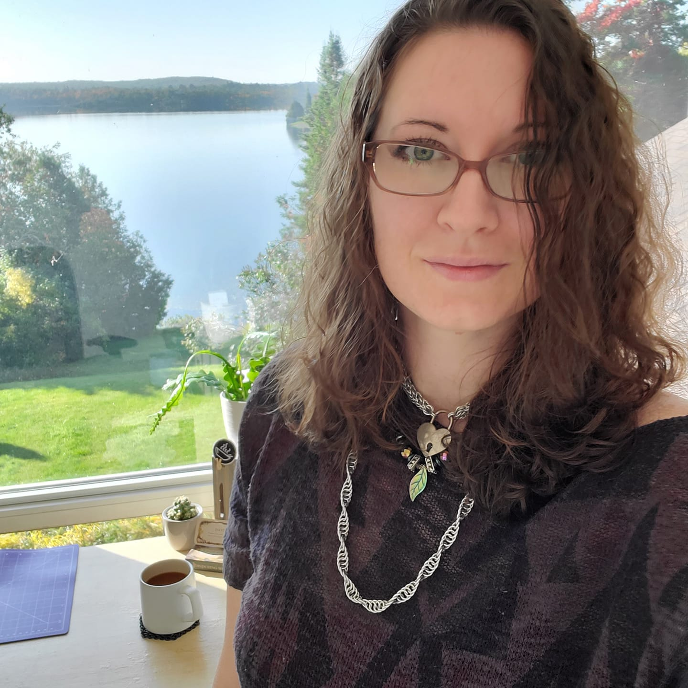
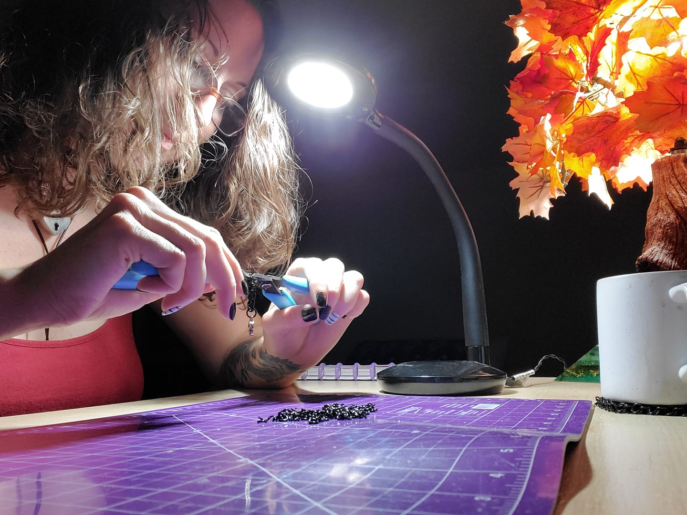
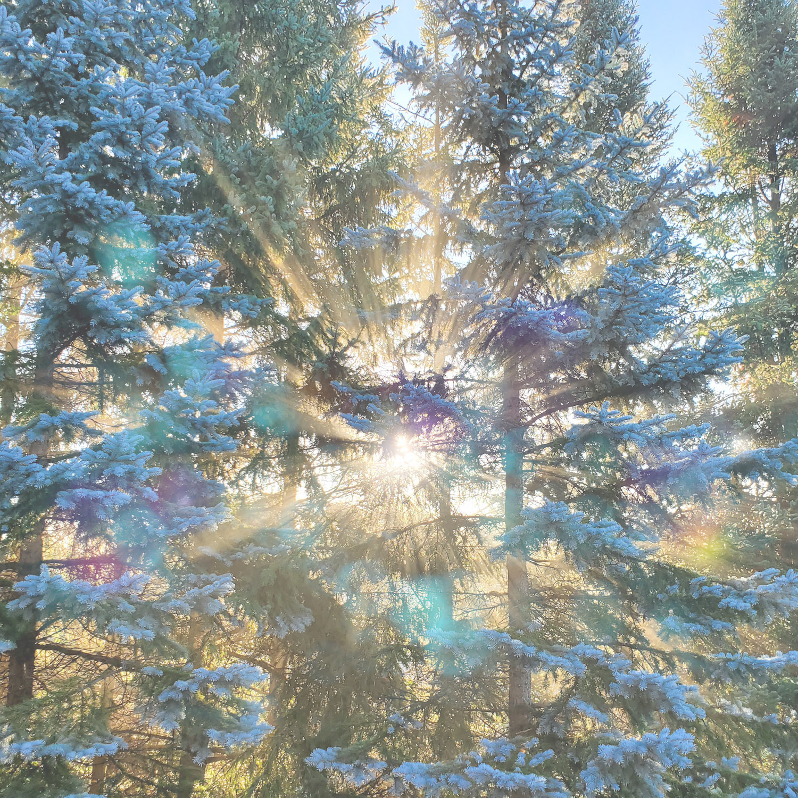
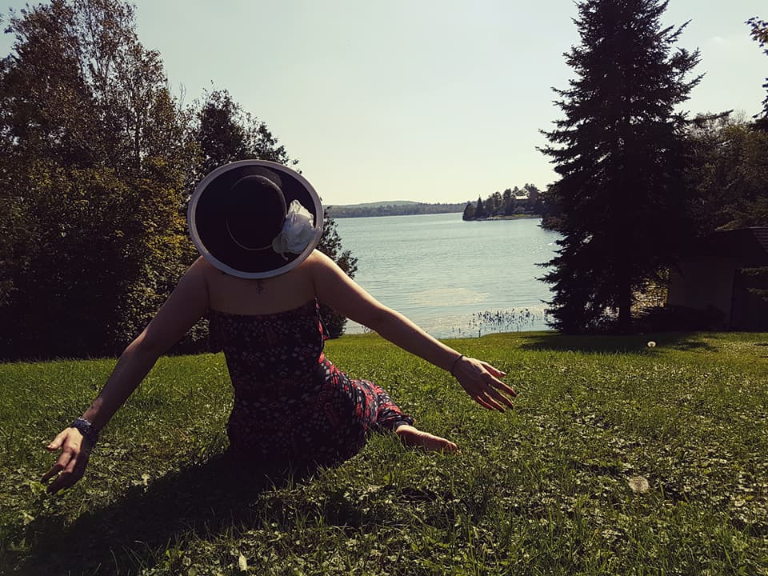

About the Owner
Hi, I’m Lexy — a curious, cozy-loving creative currently studying Web & App Development with dreams of building digital experiences as thoughtfully as my family once built my childhood home: with care, intention, and hands full of sawdust.
Before returning to school, I ran a small handmade jewelry brand called Blue Spruce Musings, where I wove chainmaille into wearable art and found beauty in details most people overlook. Though I’ve set my pliers aside for now, that same love of pattern, process, and storytelling guides me as I learn to shape lines of code instead of rings of metal.
These days, you’ll find me diving into Java, sketching out UI ideas, or sipping coffee while dreaming up my next project. Whether I’m building something physical or digital, it’s always with the same goal: to make it meaningful.
Story Behind the Name
I’ve used a few business names over the years, but when my family had to sell our beloved home, I knew it was time for something new—something that honored both the natural beauty that shaped me and the thoughtful process behind every design.
“Musings” felt right. It captured the spirit of wondering, tinkering, and crafting with care. And Blue Spruce? Those trees lined our old property, tall and watchful. They’re my Grandpa’s favourite, and over time, they became mine too.
Now, even as I shift from pliers to pixels, the name remains a compass: a reminder to build with heart, to listen to the quiet things, and to let every project—digital or handmade—carry a whisper of the woods.


